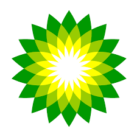

My App
Consumer App


ORGANIC FARMING
Organic farming is defined as the system of production that is capable of avoiding or majorly block the use of pesticide, synthetically compounded fertilizers, livestock feed additives and growth regulators. To the paramount extent, flexible organic farming system relies upon crop residues, green manure, pest weeds, crop rotations, off- farm organic wastes, legumes, aspects of biological pest control insects, animal manures, and etc.As the global population began to grow rapidly, the need for a more sustainable approach in food production became more obvious. Unsustainable farm practices, geared only towards higher yields, put additional pressure on global issues such as: 1.Climate changes 2.Loss of biodiversity 3.Soil erosion 4.Pollution of the most important natural resources (soil and water)
Why is Organic Farming so special...?
As a completely natural and sustainable farm management practice, organic farming is based on unique values. In other words, organic farming is not only a farm practice but also a philosophy of working together with nature.As a holistic farm management approach, organic farming aims to create a socially, environmentally, and economically sustainable food production system.More precisely, organic farming is based on managing the agro-ecosystem rather than relying on external farming inputs, such as pesticides, artificial fertilizers, additives, and genetically modified organisms.